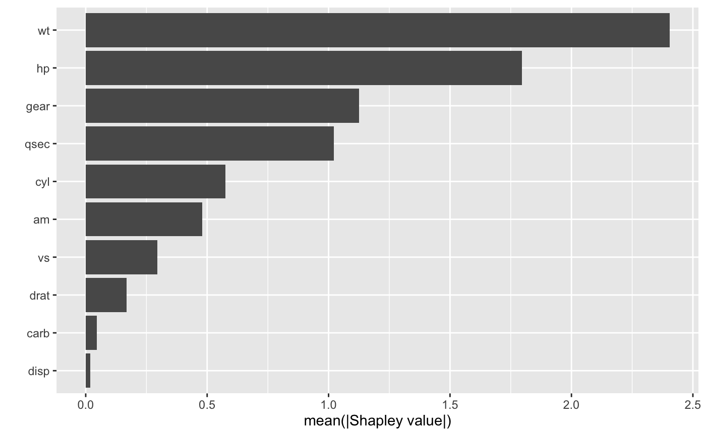
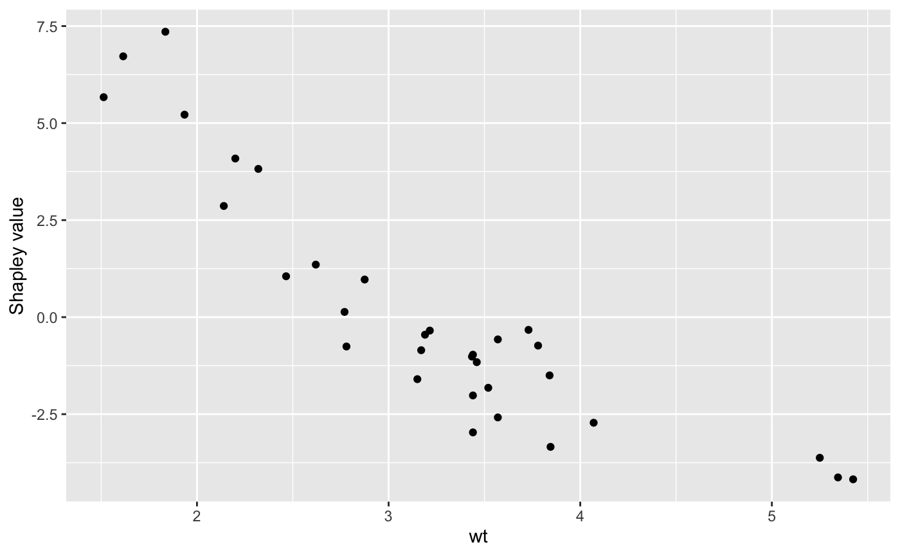
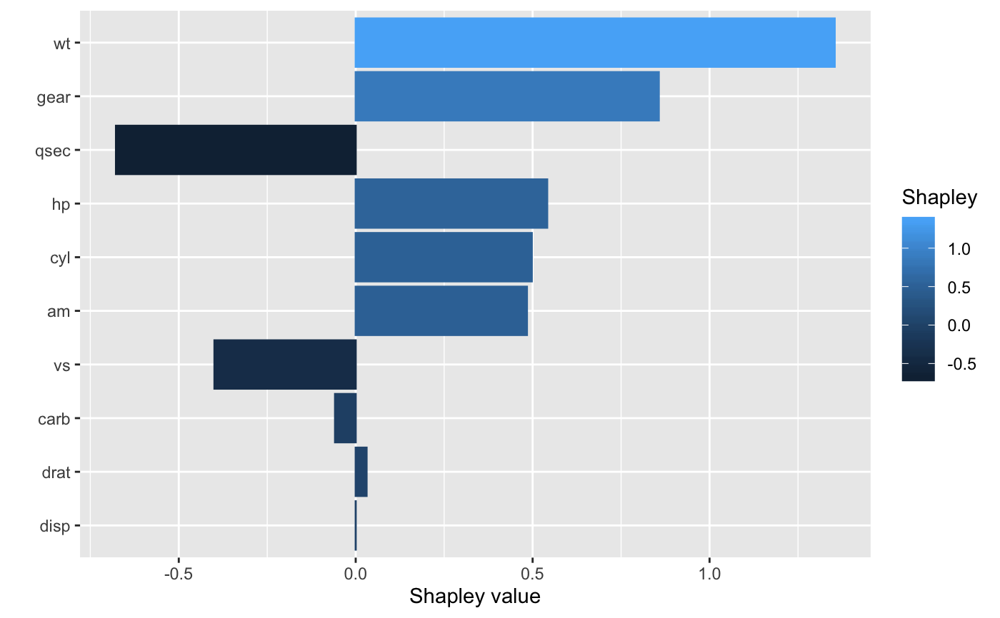

Construct Shapley-based importance plots or Shap-based dependence plots.
# S3 method for explain autoplot( object, type = c("importance", "dependence", "contribution"), feature = NULL, num_features = NULL, X = NULL, color_by = NULL, smooth = FALSE, smooth_color = "red", smooth_linetype = "solid", smooth_size = 1, smooth_alpha = 1, row_num = NULL, ... )
| object | An object of class |
|---|---|
| type | Character string specifying which type of plot to construct.
Current options are |
| feature | Character string specifying which feature to use when
|
| num_features | Integer specifying the number of variables to plot.
Default is |
| X | A matrix-like R object (e.g., a data frame or matrix) containing ONLY the feature columns from the training data. |
| color_by | Character string specifying an optional feature column in
|
| smooth | Logical indicating whether or not to add a smoother to the
scatterplot whenever |
| smooth_color | The color to use for the smoother whenever
|
| smooth_linetype | The type of line to use for the smoother whenever
|
| smooth_size | The size to use for the smoother whenever
|
| smooth_alpha | The transparency to use for the smoother whenever
|
| row_num | Integer specifying a single row/instance in |
| ... | Additional optional arguments to be passed onto
|
A "ggplot" object; see
ggplot2-package for details.
# # A projection pursuit regression (PPR) example # # Load the sample data; see ?datasets::mtcars for details data(mtcars) # Fit a projection pursuit regression model mtcars.ppr <- ppr(mpg ~ ., data = mtcars, nterms = 1) # Compute approximate Shapley values using 10 Monte Carlo simulations set.seed(101) # for reproducibility shap <- explain(mtcars.ppr, X = subset(mtcars, select = -mpg), nsim = 10, pred_wrapper = predict) shap#> # A tibble: 32 x 10 #> cyl disp hp drat wt qsec vs am gear carb #> <dbl> <dbl> <dbl> <dbl> <dbl> <dbl> <dbl> <dbl> <dbl> <dbl> #> 1 0.498 2.63e-5 0.541 0.0307 1.35 -0.677 -0.399 0.484 0.857 -0.0583 #> 2 0.00158 6.85e-3 0.379 -0.213 0.970 -1.58 -0.284 0.686 -0.177 -0.0601 #> 3 -0.650 2.44e-2 1.79 -0.170 3.82 -0.101 0.305 0.694 0.898 0.0891 #> 4 0.0600 -8.47e-3 0.945 0.242 -0.346 1.13 0.262 -0.710 -1.86 0.0498 #> 5 0.454 -1.18e-2 -1.05 0.202 -2.02 -0.548 -0.475 -0.311 -1.03 0.00221 #> 6 0.207 -1.66e-2 0.362 0.315 -1.16 1.95 0.445 -0.195 -2.09 0.0300 #> 7 0.934 -1.22e-2 -2.13 0.0442 -2.58 -1.27 -0.225 -0.163 -1.15 -0.0310 #> 8 -0.590 1.31e-2 2.83 -0.0508 -0.452 2.05 0.232 -0.660 0.0582 0.0107 #> 9 -1.01 2.43e-2 2.10 -0.174 -1.60 4.04 0.198 -0.757 0.380 0.0558 #> 10 -0.146 2.41e-3 0.577 -0.0971 -2.97 0.325 0.180 -0.526 0.523 -0.0622 #> # … with 22 more rows